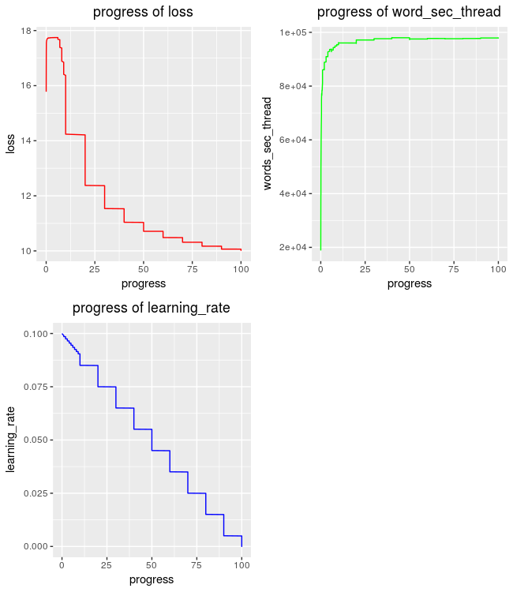

vignettes/the_fastText_R_package.Rmd
the_fastText_R_package.RmdThis vignette explains the functionality of the fastText R package.
This R package is an interface to the fasttext library
for efficient learning of word representations and sentence
classification. The following functions are included,
| fastText | |
|---|---|
| fasttext_interface | Interface for the fasttext library |
| plot_progress_logs | Plot the progress of loss, learning-rate and word-counts |
| printAnalogiesUsage | Print Usage Information when the command equals to ‘analogies’ |
| printDumpUsage | Print Usage Information when the command equals to ‘dump’ |
| printNNUsage | Print Usage Information when the command equals to ‘nn’ |
| printPredictUsage | Print Usage Information when the command equals to ‘predict’ or ‘predict-prob’ |
| printPrintNgramsUsage | Print Usage Information when the command equals to ‘print-ngrams’ |
| printPrintSentenceVectorsUsage | Print Usage Information when the command equals to ‘print-sentence-vectors’ |
| printPrintWordVectorsUsage | Print Usage Information when the command equals to ‘print-word-vectors’ |
| printQuantizeUsage | Print Usage Information when the command equals to ‘quantize’ |
| printTestLabelUsage | Print Usage Information when the command equals to ‘test-label’ |
| printTestUsage | Print Usage Information when the command equals to ‘test’ |
| printUsage | Print Usage Information for all parameters |
| print_parameters | Print the parameters for a specific command |
I’ll explain each function separately based on example data. More information can be found in the package documentation.
This function prints information about the default parameters for a specific ‘command’. The ‘command’ can be for instance supervised, skipgram, cbow etc.,
library(fastText)
print_parameters(command = "supervised")
Empty input or output path.
The following arguments are mandatory:
-input training file path
-output output file path
The following arguments are optional:
-verbose verbosity level [2]
The following arguments for the dictionary are optional:
-minCount minimal number of word occurences [1]
-minCountLabel minimal number of label occurences [0]
-wordNgrams max length of word ngram [1]
-bucket number of buckets [2000000]
-minn min length of char ngram [0]
-maxn max length of char ngram [0]
-t sampling threshold [0.0001]
-label labels prefix [__label__]
The following arguments for training are optional:
-lr learning rate [0.1]
-lrUpdateRate change the rate of updates for the learning rate [100]
-dim size of word vectors [100]
-ws size of the context window [5]
-epoch number of epochs [5]
-neg number of negatives sampled [5]
-loss loss function {ns, hs, softmax, one-vs-all} [softmax]
-thread number of threads [12]
-pretrainedVectors pretrained word vectors for supervised learning []
-saveOutput whether output params should be saved [false]
The following arguments for quantization are optional:
-cutoff number of words and ngrams to retain [0]
-retrain whether embeddings are finetuned if a cutoff is applied [false]
-qnorm whether the norm is quantized separately [false]
-qout whether the classifier is quantized [false]
-dsub size of each sub-vector [2]
Error in give_args_fasttext(args = c("fasttext", command)) :
EXIT_FAILURE -- args.cc file -- Args::parseArgs functionEach one of the functions which includes the words print and Usage allows a user to print information for this specific function. For instance,
printPredictUsage()
usage: fasttext predict[-prob] <model> <test-data> [<k>] [<th>]
<model> model filename
<test-data> test data filename (if -, read from stdin)
<k> (optional; 1 by default) predict top k labels
<th> (optional; 0.0 by default) probability threshold
This function allows the user to run the various methods included in the fasttext library from within R. The data that I’ll use in the following code snippets can be downloaded as a .zip file (named as fastText_data) from my Github repository. The user should then unzip the file and make the extracted folder his / hers default directory (using the base R function setwd()) before running the following code chunks.
setwd('fastText_data') # make the extracted data the default directory
#------
# cbow
#------
library(fastText)
list_params = list(command = 'cbow',
lr = 0.1,
dim = 50,
input = "example_text.txt",
output = file.path(tempdir(), 'word_vectors'),
verbose = 2,
thread = 1)
res = fasttext_interface(list_params,
path_output = file.path(tempdir(), 'cbow_logs.txt'),
MilliSecs = 5,
remove_previous_file = TRUE,
print_process_time = TRUE)
Read 0M words
Number of words: 8
Number of labels: 0
Progress: 100.0% words/sec/thread: 2933 lr: 0.000000 loss: 4.060542 ETA: 0h 0m
time to complete : 3.542332 secs The data is saved in the specified tempdir() folder for illustration purposes. The user is advised to specify his / her own folder.
#-----------
# supervised
#-----------
list_params = list(command = 'supervised',
lr = 0.1,
dim = 50,
input = file.path("cooking.stackexchange", "cooking.train"),
output = file.path(tempdir(), 'model_cooking'),
verbose = 2,
thread = 4)
res = fasttext_interface(list_params,
path_output = file.path(tempdir(), 'sup_logs.txt'),
MilliSecs = 5,
remove_previous_file = TRUE,
print_process_time = TRUE)
Read 0M words
Number of words: 14543
Number of labels: 735
Progress: 100.0% words/sec/thread: 63282 lr: 0.000000 loss: 10.049338 ETA: 0h 0m
time to complete : 3.449003 secs The user has here also the option to plot the progress of loss, learning-rate and word-counts,
res = plot_progress_logs(path = file.path(tempdir(), 'sup_logs.txt'),
plot = TRUE)
dim(res)
The verbosity for the logs-file depends on,
parameters.
The next command can be utilized to ‘predict’ new data based on the output model,
#-------------------
# 'predict' function
#-------------------
list_params = list(command = 'predict',
model = file.path(tempdir(), 'model_cooking.bin'),
test_data = file.path('cooking.stackexchange', 'cooking.valid'),
k = 1,
th = 0.0)
res = fasttext_interface(list_params,
path_output = file.path(tempdir(), 'predict_valid.txt'))These output predictions will be of the following form ’__label__food-safety’ , where each line will represent a new label (number of lines of the input data must match the number of lines of the output data). With the ‘predict-prob’ command someone can obtain the probabilities of the labels as well,
#------------------------
# 'predict-prob' function
#------------------------
list_params = list(command = 'predict-prob',
model = file.path(tempdir(), 'model_cooking.bin'),
test_data = file.path('cooking.stackexchange', 'cooking.valid'),
k = 1,
th = 0.0)
res = fasttext_interface(list_params,
path_output = file.path(tempdir(), 'predict_valid_prob.txt'))Using ‘predict-prob’ the output predictions will be of the following form ’__label__baking 0.0282927’
Once the model was trained, someone can evaluate it by computing the precision and recall at ‘k’ on a test set. The ‘test’ command just prints the metrics in the R session,
#----------------
# 'test' function
#----------------
list_params = list(command = 'test',
model = file.path(tempdir(), 'model_cooking.bin'),
test_data = file.path('cooking.stackexchange', 'cooking.valid'),
k = 1,
th = 0.0)
res = fasttext_interface(list_params)
N 3000
P@1 0.138
R@1 0.060whereas the ‘test-label’ command allows the user to save,
#----------------------
# 'test-label' function
#----------------------
list_params = list(command = 'test-label',
model = file.path(tempdir(), 'model_cooking.bin'),
test_data = file.path('cooking.stackexchange', 'cooking.valid'),
k = 1,
th = 0.0)
res = fasttext_interface(list_params,
path_output = file.path(tempdir(), 'test_label_valid.txt'))the output to the ‘test_label_valid.txt’ file, which includes the ‘Precision’ and ‘Recall’ for each unique label on the data set (‘cooking.stackexchange.txt’). That means the number of rows of the ‘test_label_valid.txt’ must be equal to the unique labels in the ‘cooking.stackexchange.txt’ data set. This can be verified using the following code snippet,
st_dat = read.delim(file.path("cooking.stackexchange", "cooking.stackexchange.txt"),
stringsAsFactors = FALSE)
res_stackexch = unlist(lapply(1:nrow(st_dat), function(y)
strsplit(st_dat[y, ], " ")[[1]][which(sapply(strsplit(st_dat[y, ], " ")[[1]], function(x)
substr(x, 1, 9) == "__label__") == T)])
)
test_label_valid = read.table(file.path(tempdir(), 'test_label_valid.txt'),
quote="\"", comment.char="")
# number of unique labels of data equal to the rows of the 'test_label_valid.txt' file
length(unique(res_stackexch)) == nrow(test_label_valid)
[1] TRUE
head(test_label_valid)
V1 V2 V3 V4 V5 V6 V7 V8 V9 V10
1 F1-Score : 0.234244 Precision : 0.139535 Recall : 0.729167 __label__baking
2 F1-Score : 0.227746 Precision : 0.132571 Recall : 0.807377 __label__food-safety
3 F1-Score : 0.058824 Precision : 0.750000 Recall : 0.030612 __label__substitutions
4 F1-Score : 0.000000 Precision : -------- Recall : 0.000000 __label__equipment
5 F1-Score : 0.017699 Precision : 1.000000 Recall : 0.008929 __label__bread
6 F1-Score : 0.000000 Precision : -------- Recall : 0.000000 __label__chicken
.....The user can also ‘quantize’ a supervised model to reduce its memory usage with the following command,
#---------------------
# 'quantize' function
#---------------------
list_params = list(command = 'quantize',
input = file.path(tempdir(), 'model_cooking.bin'),
output = file.path(tempdir(), 'model_cooking'))
res = fasttext_interface(list_params)
print(list.files(tempdir(), pattern = '.ftz'))
[1] "model_cooking.ftz"The quantize function is currenlty (as of 01/02/2019) single-threaded.
Based on the ‘queries.txt’ text file the user can save the word vectors to a file using the following command ( one vector per line ),
#----------------------------
# print-word-vectors function
#----------------------------
list_params = list(command = 'print-word-vectors',
model = file.path(tempdir(), 'model_cooking.bin'))
res = fasttext_interface(list_params,
path_input = 'queries.txt',
path_output = file.path(tempdir(), 'word_vecs_queries.txt'))To compute vector representations of sentences or paragraphs use the following command,
#--------------------------------
# print-sentence-vectors function
#--------------------------------
library(fastText)
list_params = list(command = 'print-sentence-vectors',
model = file.path(tempdir(), 'model_cooking.bin'))
res = fasttext_interface(list_params,
path_input = 'text_sentence.txt',
path_output = file.path(tempdir(), 'word_sentence_queries.txt'))Be aware that for the ‘print-sentence-vectors’ the ‘word_sentence_queries.txt’ file should consist of sentences of the following form,
How much does potato starch affect a cheese sauce recipe</s>
Dangerous pathogens capable of growing in acidic environments</s>
How do I cover up the white spots on my cast iron stove</s>
How do I cover up the white spots on my cast iron stove</s>
Michelin Three Star Restaurant but if the chef is not there</s>
......Therefore each line should end in EOS (end of sentence ) and that if at the end of the file a newline exists then the function will return an additional word vector. Thus the user should make sure that the input file does not include empty lines at the end of the file.
The ‘print-ngrams’ command prints the n-grams of a word in the R session or saves the n-grams to a file. But first the user should save the model and word-vectors with n-grams enabled (minn, maxn parameters)
#----------------------------------------
# 'skipgram' function with n-gram enabled
#----------------------------------------
list_params = list(command = 'skipgram',
lr = 0.1,
dim = 50,
input = "example_text.txt",
output = file.path(tempdir(), 'word_vectors'),
verbose = 2,
thread = 1,
minn = 2,
maxn = 2)
res = fasttext_interface(list_params,
path_output = file.path(tempdir(), 'skipgram_logs.txt'),
MilliSecs = 5)
#-----------------------
# 'print-ngram' function
#-----------------------
list_params = list(command = 'print-ngrams',
model = file.path(tempdir(), 'word_vectors.bin'),
word = 'word')
# save output to file
res = fasttext_interface(list_params,
path_output = file.path(tempdir(), 'ngrams.txt'))
# print output to console
res = fasttext_interface(list_params,
path_output = "")
# truncated output for the 'word' query
#--------------------------------------
<w -0.00983 0.00178 0.01929 0.00994 ......
wo 0.01114 0.01570 0.01294 0.01284 ......
or -0.01035 -0.01585 -0.01671 -0.00043 ......
rd 0.01840 -0.00378 -0.01468 0.01088 ......
d> 0.00749 0.00720 0.01171 0.01258 ......The ‘nn’ command returns the nearest neighbors for a specific word based on the input model,
#--------------
# 'nn' function
#--------------
list_params = list(command = 'nn',
model = file.path(tempdir(), 'model_cooking.bin'),
k = 5,
query_word = 'sauce')
res = fasttext_interface(list_params,
path_output = file.path(tempdir(), 'nearest.txt'))
# 'nearest.txt'
#--------------
rice 0.804595
</s> 0.799858
Vide 0.78893
store 0.788918
cheese 0.785977The ‘analogies’ command works for triplets of words (separated by whitespace) and returns ‘k’ rows for each line (triplet) of the input file (separated by an empty line),
#---------------------
# 'analogies' function
#---------------------
list_params = list(command = 'analogies',
model = file.path(tempdir(), 'model_cooking.bin'),
k = 5)
res = fasttext_interface(list_params,
path_input = 'analogy_queries.txt',
path_output = file.path(tempdir(), 'analogies_output.txt'))
# 'analogies_output.txt'
#-----------------------
batter 0.857213
I 0.854491
recipe? 0.851498
substituted 0.845269
flour 0.842508
covered 0.808651
calls 0.801348
fresh 0.800051
cold 0.797468
always 0.793695
.............Finally, the ‘dump’ function takes as ‘option’ one of the ‘args’, ‘dict’, ‘input’ or ‘output’ and dumps the output to a text file,
#--------------
# dump function
#--------------
list_params = list(command = 'dump',
model = file.path(tempdir(), 'model_cooking.bin'),
option = 'args')
res = fasttext_interface(list_params,
path_output = file.path(tempdir(), 'dump_data.txt'),
remove_previous_file = TRUE)
# 'dump_data.txt'
#----------------
dim 50
ws 5
epoch 5
minCount 1
neg 5
wordNgrams 1
loss softmax
model sup
bucket 0
minn 0
maxn 0
lrUpdateRate 100
t 0.00010